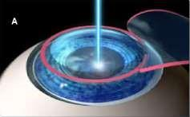
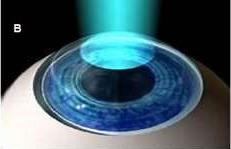
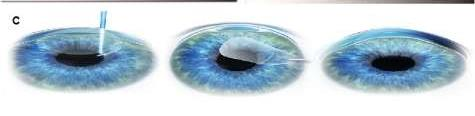
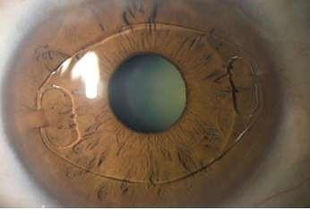
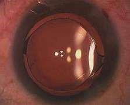
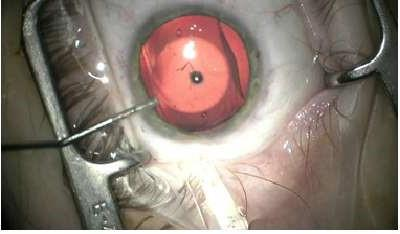

Refraction · Myopia
Myopia: refractive surgery
2) Refractive surgery: Types
- Corneal refractive surgery: Adjusting the curvature of cornea e.g.
- a) Lasik in situ keratomileusis (LASIK).
- b) Photo-refractive keratectomy (PRK).
- c) Femtosecond laser assisted Small Incision Lenticule Extraction (Femto-SMILE).
- Lens refractive surgery:
- a) Phakic IOL: Implantation of IOL on the crystalline lens of the eye.
- b) Refractive lens exchange (RLE).





